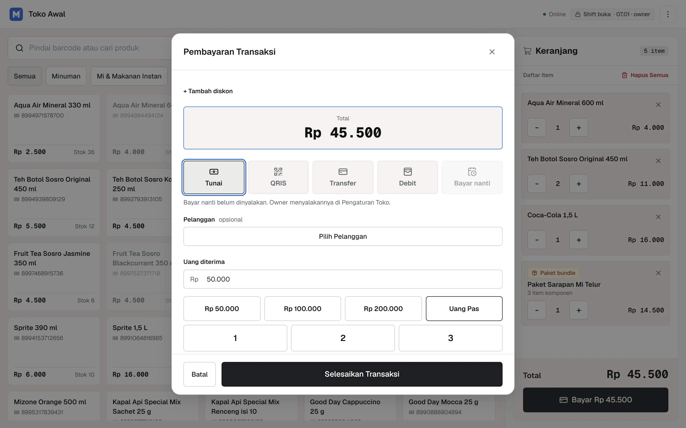
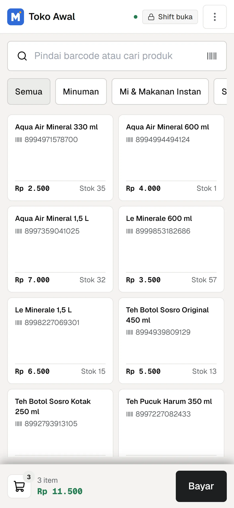
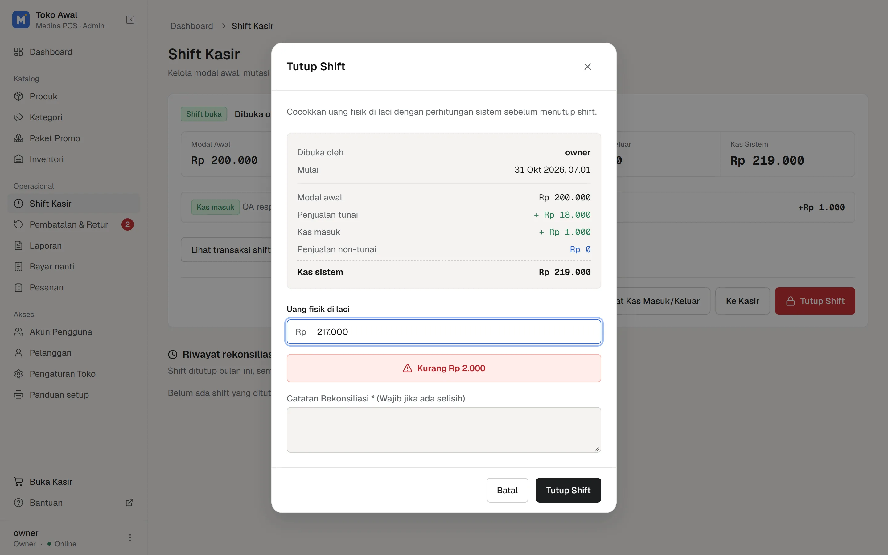
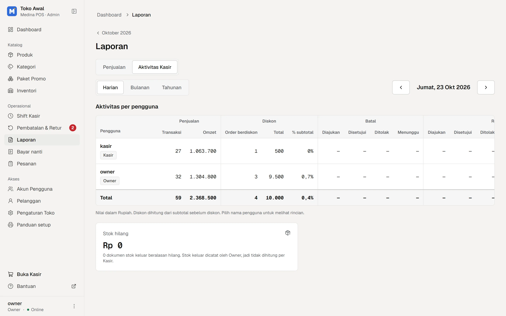
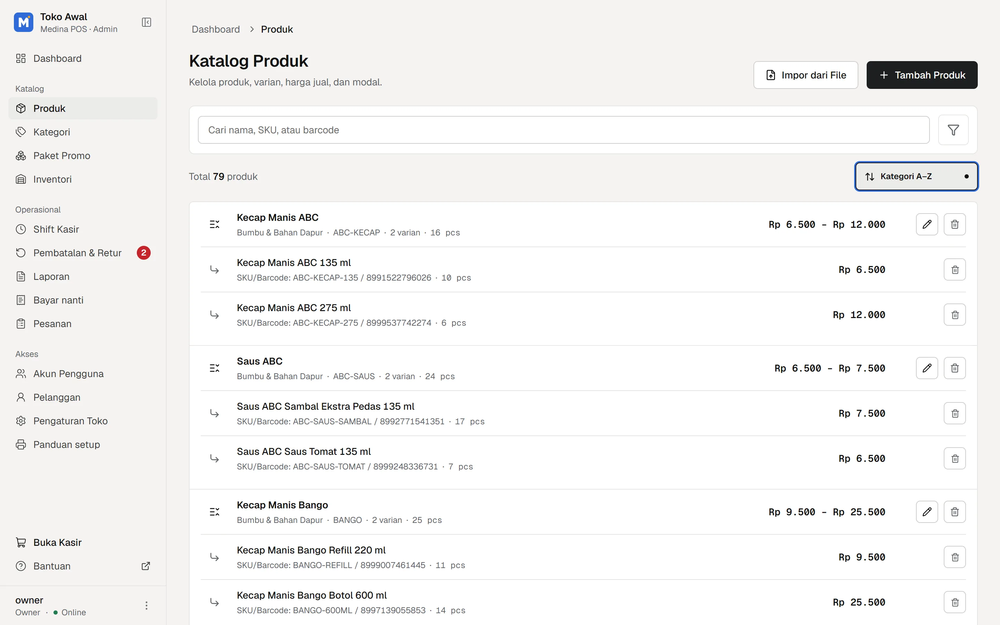
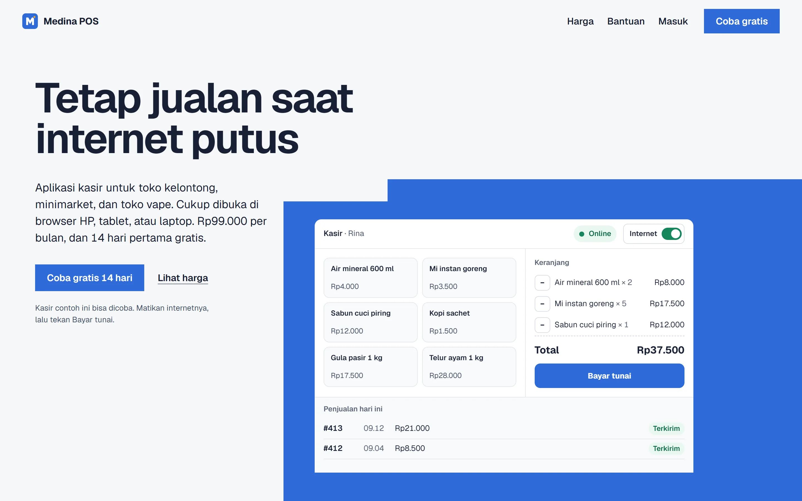

The screens
Scan a barcode or tap a product. A bundle takes stock from each item inside it.
What it does
Sells with no internetSales and shifts are saved on the device and sent when it is back online.
Counts the drawerEach shift ends with cash counted against the system.
Fast changeQuick cash buttons and a keypad work out the change.
Bundles and variantsOne SKU and barcode per variant; bundles draw stock from each part.
Five ways to payCash, QRIS, transfer, debit and pay later.
One code per shopCashiers sign in with the shop code and their own account.
Thermal receiptsPrints to 58 or 80 mm printers; works with USB and Bluetooth scanners.
Returns need the ownerCashiers request cancels and returns; the owner approves them.
First, open the shift with a float
The cashier counts the cash already in the drawer. Every sale and every cash in or out is added to it.
Buka shift
Rp 200.000
Buka shiftPenjualan shift ini
- #0001 · 07.12Rp 45.500Antre
- #0002 · 07.20Rp 12.000Antre
- #0003 · 07.31Rp 7.500Antre
Tutup shift
- Modal awal
- Rp 200.000
- Penjualan tunai
- Rp 65.000
- Kas masuk
- Rp 0
- Kas sistem
- Rp 265.000
- Uang fisik di laci
- Rp 263.000
Kurang Rp 2.000
- Open the shift
- Sell offline
- Back online
- Close the shift
Everything in it
At the till
| Feature | Detail | Who | State |
|---|---|---|---|
| Barcode and search | USB or Bluetooth scanner | Cashier | Built |
| Offline sales queue | IndexedDB, idempotent sync | Cashier | Built |
| Five payment methods | Cash, QRIS, transfer, debit, later | Cashier | Built |
| Discounts | Capped, logged per cashier | Cashier | Built |
| Receipts and reprints | 58 or 80 mm thermal | Cashier | Built |
| Shifts and cash moves | Float, cash in, cash out | Cashier | Built |
| Pay later | Customer tabs, paid off later | Cashier | Built |
| Orders with a deposit | Down payment, pick up later | Cashier | Built |
For the owner
| Feature | Detail | Who | State |
|---|---|---|---|
| Daily dashboard | Profit, sales, stock alerts | Owner | Built |
| Reports by day, month, year | CSV export at any time | Owner | Built |
| Cashier activity | Discounts, cancels, drawer gaps | Owner | Built |
| Products and variants | SKU and barcode per variant | Owner | Built |
| Bundles | Stock drawn from each part | Owner | Built |
| Stock in and stock out | Cost price, supplier, reason | Owner | Built |
| Excel import | Products and stock documents | Owner | Built |
| Return approvals | Cashier asks, owner decides | Owner | Built |
How it is built
| Part | Tools | Where | Note |
|---|---|---|---|
| Frontend | Next.js 15, TypeScript, Tailwind | Browser | PWA |
| Offline data | Dexie, TanStack Query | Device | Queue |
| API | Go, net/http | Server | REST |
| Database | PostgreSQL, row-level security | Server | Per shop |
| Money | Whole integers, no floats | Everywhere | Exact |
| Sign-in | Ed25519 tokens, lockout | Server | Roles |
| Tests | Go tests, Vitest, Playwright | Local | End to end |
| Way of working | Specs, then AI agents for FE, BE, QA | Workspace | Reviewed |
How many sales a day?
Rp55per sale
The planned price, Rp99.000 a month, divided by your sales over 30 days. One package: no fee per cashier, device or product.
Not open yet
Medina POS is still being built. Type your shop’s name and the button writes me an email, so I can tell you when it opens.